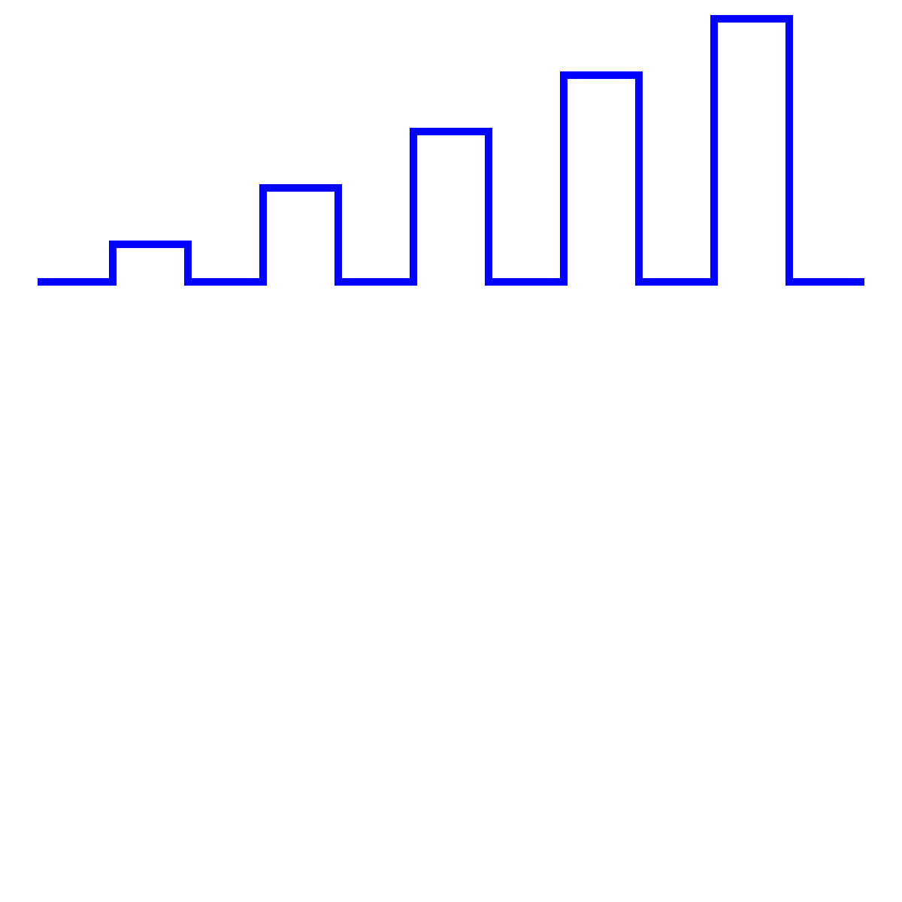

1. juni 2010 Bachelor for Informatikk 2009/2010 Høgskolen i Vestfold Gruppemedlemmer: Petter Dahl Thunæs Robin Smidsrød Veileder: Viggo Holmstedt
SVG-standarden (Scalable Vector Graphics) har vært tilgjengelig i mange år. Den har likevel ikke total markedspenetrasjon. Vi ønsker å finne ut hvorfor SVG den dag i dag fremdeles ikke kan benyttes av utviklere uten å måtte forholde seg til hvor standarden er støttet. En viktig del av dette er å finne ut hvordan Microsoft har påvirket utvikleres syn på SVG som en moden standard. I tillegg ønsker vi også å finne ut av om SVG fremdeles er den teknologien som anbefales for presentasjon av skalerbar grafikk på World Wide Web, eller om det er kommet andre teknologier på markedet som bedre løser SVG sitt problemområde.
For å illustrere bruk av SVG ønsker vi å lage et bibliotek som genererer diagrammer til forretningsbruk, slik som kakediagram og linjediagram. Vi velger også å lage et tradisjonelt program med grafisk brukergrensesnitt. Dette programmet skal ta imot data fra brukeren og generere SVG-filer ved hjelp av biblioteket omtalt over. Programmet skal kunne lese inn data fra ekstern kilde, slik som en fil eller URL.
Vi vil bruke en smidig utviklingsmetodikk (agile), hvor vi setter opp korte perioder (sprint), hvor vi jobber på spesifikke problemstillinger. Idéen med smidig utvikling er at etter hver periode sitter man igjen med et system som virker med den funksjonaliteten som var planlagt for perioden. Hver periode begynner med en planleggingsrunde over hva man skal ha med, og avsluttes med versjoner av applikasjon og bibliotek som kan benyttes slik de er. Vi setter opp til en felles dag i uken med arbeid i plenum og jobber hver for oss de resterende dagene. Vi kommer til å bruke 3 uker pr. periode. Oppgaver som ikke er utført i en periode på grunn av manglende tid vil bli overført til neste periode. Start og slutt på en periode legges til felles arbeidsdager i den gjeldende uken. All dokumentasjon av programvaren benytter engelsk som språk. Dette gjør det enklere for tredjeparter å evaluere koden i prosjektet uavhengig av norsk språkforståelse.
Vi skal lage et Java-bibliotek som gjør det mulig å generere SVG-filer basert på instanser med strukturerte data. Vi velger å benytte mønstre for god programdesign slik at biblioteket gjør det enkelt å utvide biblioteket til å støtte mer funksjonalitet på et senere tidspunkt. Vi planlegger å benytte white-box reuse-konseptet for å oppnå høy fleksibilitet.
Vi planlegger å lage en tolk (eng:parser) som kan ta inndata i form av XML eller CSV (Comma Separated Values) og gjøre om dette til strukturer som SVG-generatoren kan benytte. Intensjonen er å gjøre det mulig å enkelt eksportere data fra et regneark (f.eks. Excel eller OpenOffice) som kan benyttes som inn-data til denne tolken. Poenget er å støtte det eksport-formatet som er enklest å generere for en sluttbruker av desktop-applikasjonen. Excel sitt "XML-regneark 2003"-format er f.eks. godt egnet som inndata.
Her planlegger vi å lage en normal applikasjon som kan gi et grensesnitt til brukeren for å skrive inn data eller laste inn en fil for å fylle inn et datasett. Den skal igjen kunne generere SVG-filer basert på dette datasettet og åpne de i en nettleser. Applikasjonen skal detektere hvilke nettlesere brukeren har og gi en opsjon på hvilken man ønsker å benytte til presentasjon av SVG-filen. Hvis tiden strekker til vurderer vi og også legge inn støtte for å prosessere mange filer på en gang (eng:batch-conversion). Med et godt API for hvordan generere et datasett burde det være enkelt å utvide applikasjonen fra å håndtere kun en fil til å kunne håndtere mange filer på en gang. Vi planlegger å benytte mønstre for god programdesign for å gjøre applikasjonen enkel å utvide og lettere å vedlikeholde. Dette vil passe godt sammen med vårt valg om å benytte en smidig utviklingsmetodikk.
Kildekoden til biblioteket og applikasjonen velger vi å tilgjengeliggjøre under BSD-lisensen. Dette gjør det mulig for andre utviklere å benytte koden fra denne bacheloroppgaven i kommersielle sammenhenger.
Vi velger å benytte oss av Eclipse på grunn av god erfaring med denne utviklingsplatformen. Siden vi har opparbeidet oss god erfaring med bruk av Java velger vi å benytte dette programmeringsspråket til modellapplikasjonen.
For å koordinere arbeidsoppgavene i prosjektet velger vi å benytte LiquidPlanner.com (LP) som er et svært godt planleggingsverktøy som er gratis tilgjenglig for akademisk bruk. LP er svært godt egnet til en smidig utviklingsmetodikk.
Versjonskontroll er viktig i større prosjekter. For å dekke det behovet velger vi å benytte Git og GitHub.com. Git gir oss gode muligheter til å jobbe på flere deler av prosjektet samtidig uten frykt for integrasjonsproblemer. Denne muligheten kommer fra det faktum at Git er et distribuert revisjonskontrollsystem.
Grunnen til at vi velger GitHub.com som tjenesteleverandør er at de gir gratis tilgang til prosjekter som klassifiseres som fri programvare. De er en seriøs aktør på markedet med svært god stabilitet og sikkerhet. I tillegg har brukergrensesnittet deres mange fiffige funksjoner som øker effektiviteten i en distribuert utviklingsarbeidsflyt. Dersom noen utviklere i fremtiden ønsker å videreutvikle prosjektet gir GitHub dem en enkel mulighet til å gjøre det.
Scalable Vector Graphics (SVG1) er en åpen standard utgitt av World Wide Web Consortium (W3C2) som skal dekke behovet i markedet for å kunne representere to-dimensjonal grafikk på et utvalg av medier og enheter. Man kan si at det er et programmeringspråk for å beskrive to-dimensjonal grafikk og grafiske applikasjoner. Med to-dimensjonal grafikk snakker vi om vektoriserte figurer, raster-grafikk (bitmap) og tekst-elementer.
SVG baserer seg på mange andre åpne standarder og prøver å gjenbruke de3 så mye som mulig for å unngå overlappende standardiseringsarbeid, både innenfor og utenfor W3C-prosessen.
SVG-standarden er implementert som en applikasjon i XML4. Det er en deklarativ5 standard på lik linje med HTML6. Hvordan SVG fysisk representeres i XML omtales i seksjon 1.4.
SVG har støtte for scripting, noe som gjør det mulig å lage avanserte brukergrensesnitt og interaksjoner basert på kjente programmeringsprinsipper benyttet i tradisjonell web-design. SVG benytter ECMAScript7 som sitt scriptspråk, noe som gjør det lett for en web-utvikler å benytte eksisterende kunnskap til å gjøre SVG-dokumenter interaktive. SVG benytter også DOM-standarden8, på linje med HTML og XML, for å kunne adressere og manipulere individuelle elementer i et SVG-dokument fra et script.
SVG har også støtte for animasjon. Dette gjøres med notasjon basert på SMIL-standarden9. Hvordan SMIL benyttes for å animere et element blir omtalt i seksjon 1.4. Animasjon basert på SMIL er deklarativ, mens animasjon basert på bruk av script-støtten i SVG er prosedyre-basert. Den deklarative notasjonen med SMIL er noe som brukere som har erfaring med tradisjonell animasjon sannsynligvis vil kjenne igjen fordi det baserer seg på tidskoder, synkronisering av aktiviteter over en tidslinje med mer. Tradisjonelle programmerer, derimot, vil sannsynligvis føle seg mer bekvemme med å bruke script-støtten for å utføre en tilsvarende animasjon. Dette betyr i praksis at SVG-standarden er fleksibel nok til at brukere med forskjellige teknologisk utgangspunkt kan ta den i bruk og benytte de delene som er nødvendig for dem.
W3C forklarer selv hva SVG er på denne måten10:
Scalable Vector Graphics (SVG) is like HTML for graphics. It is a markup language for describing all aspects of an image or Web application, from the geometry of shapes, to the styling of text and shapes, to animation, to multimedia presentations including video and audio. It is fully interactive, and includes a scriptable DOM as well as declarative animation (via the SMIL specification). It supports a wide range of visual features such as gradients, opacity, filters, clipping, and masking.
The use of SVG allows fully scalable, smooth, reusable graphics, from simple graphics to enhance HTML pages, to fully interactive chart and data visualization, to games, to standalone high-quality static images. SVG is natively supported by most modern browsers (with plugins to allow its use on all browsers), and is widely available on mobile devices and set-top boxes. All major vector graphics drawing tools import and export SVG, and they can also be generated through client-side or server-side scripting languages.
Det finnes flere forskjellige profiler av SVG11 som beskriver deler av spesifikasjonen. Disse forskjellige profilene er utviklet slik at leverandører av programvare og enheter kan støtte et del-sett av SVG sin totale funksjonalitet og fremdeles være kompatibel med en gitt profil. Under kan du se en oversikt over de forskjellige profilene som er definert.
FIXME: Bytt til figur med UML-diagram av avhengighetene mellom profilene (i SVG).
SVG Mobile-profilen (som ombefatter både SVG Tiny og SVG Basic) ble adoptert av 3GPP12, en samling av mobiloperatører, som grunnlaget for deres støtte for grafikk i mobile enheter. Flere av disse mobiloperatørene jobber aktivt med å videreutvikle SVG Mobile-profilen for å dekke deres behov på mobile enheter.
SVG Print-profilen fokuserer på hvordan SVG kan benyttes til å gi høyoppløselige utskrifter av grafikk på papir og andre ikke-bevegelige medier. Animasjon og andre interaktive elementer i SVG er naturligvis ikke med i denne profilen da det ikke lar seg reprodusere i statisk format. Canon, HP, Adobe og Corel er aktive medlemmer som jobber med videreutvikling av denne profilen.
SVG Full er den profilen som dekker opp for alle de andre variantene. Hvis man hevder at en applikasjon støtter SVG Full må den også støtte alle de andre profilene, fordi de andre profilene bare er del-sett av SVG Full.
De følgende institusjoner er registrert med et eller flere medlemmer i SVG Working Group (WG) pr. 7. mars 201013.
Ved å analysere epost-listene public-svg-wg14 og public-svg-ig15 kommer vi frem til følgende oversikt over aktivitet fra de forskjellige medlemsorganisasjoner:
| Organisasjon | Ant. meld. til WG+IG | Andel |
|---|---|---|
| W3C | 1089 | 66% |
| Opera | 253 | 15% |
| Canon | 158 | 9% |
| Institut Telecom | 42 | 2% |
| Ikivo | 22 | 1% |
| Mozilla | 19 | 1% |
| Apple | 19 | 1% |
| Quickoffice | 18 | 1% |
| Adobe | 11 | 0% |
| Microsoft | 3 | 0% |
| Samsung | 1 | 0% |
| Telecom Italia SpA | 0 | 0% |
| Rochester Institute of Technology | 0 | 0% |
| PTC-Arbortext | 0 | 0% |
| Ericsson | 0 | 0% |
| Cisco | 0 | 0% |
Dessverre ble epost-listene til SVG WG først gjort offentlig i 2008, noe som fører til at denne oversikten over aktivitet ikke gjenspeiler en helhetlig oversikt over all kommunikasjon som har forekommet internt i SVG WG, men kun for de siste to årene. Det er uansett interessant å se på disse dataene, da de gjenspeiler interesse fra de forskjellige organisasjonene som står som medlemmer.
Det som umiddelbart viser seg er at W3C internt står for mesteparten av aktiviteten rundt standardiseringsarbeidet, hele 2/3 av all aktiviteten i perioden tallene er hentet fra.
Opera viser seg som den mest aktive nettleser-leverandøren med 15% aktivitet. Deres fokus på SVG gjenspeiler seg også i kvaliteten på deres implementasjon av SVG i deres nettleser, noe som blir mer omtalt i kapittel 2. Mozilla, Apple og Microsoft derimot viser ikke altfor stor aktivitet i gruppen, noe som igjen kan gjenspeiles i deres implementasjoner (mer informasjon om forskjeller i implementasjonene omtales i kapittel 2).
Canon viser et ganske høyt aktivitetsnivå, noe som overrasker, siden de er et firma som hovedsaklig baserer seg på produkter som driver med raster-teknologi (fotografi og utskrift). Adobe, som også driver med grafiske applikasjoner, viser helt klart et lavere aktivitetsnivå, noe som kan bety at de ikke er fullt så fokusert på standardisering pga. deres høye markedsandel i deres segment.
Institut Télécom16 er et firma som driver med trening og utdanning av fagpersoner innen telekom-sektoren. Deres aktivitet viser at de er interessert i åpne standarder, og at vektorisert grafikk er et viktig område også for telekom-sektoren. Ikivo AB17 er et selskap som fokuserer på multimediale applikasjoner for mobile enheter. Deres aktivitet viser at de ser på SVG som en viktig standard for mobile enheter. De fremhever spesifikt på sin informasjonsside18 at de benytter SVG Mobile 1.2 og andre åpne standarder i deres Enrich-produkter.
De resterende medlemmene viser liten til ingen aktivitet i arbeidsgruppen, noe som kan bety at de ikke interesserer seg fullt så mye for videre utbedring av SVG-standarden, eller at de benytter andre måter å kommunisere med de andre medlemmene i arbeidsgruppen.
Som vår epost til SVG WG viser, har vi prøvd å få tak i mer informasjon om aktiviteten før 2008, men foreløpig (2010-01-04) er det uvisst hvorvidt vi vil få tilgang til disse opplysningene. Hvis vi får opplysningene kan vi gjøre en større analyse av aktiviteten internt i arbeidsgruppen for å se hvilke organisasjoner som har bidratt mest til at standarden har utviklet seg. Hvis ikke vi får disse opplysningene må vi basere våre funn på de offentlige dataene gjengitt ovenfor.
Med utgangspunkt i dokumentet The Secret Origin of SVG19 er det tydelig at mange organisasjoner var svært interessert i å få en enhetlig standard for vektorgrafikk på internett i midten av 1990-tallet. Det eksisterte mange forskjellige varianter, men rundt 1998 var det disse fem standardene som sto igjen som de mest sannsynlige til å ta over markedet som en åpen standard for vektorgrafikk: PGML20, VML21, HGML22, DrawML23 og WebCGM24.
På grunnlag av disse forskjellige forslagene til standarder ble det avgjort å stifte en arbeidsgruppe (SVG WG) for å utvikle en ny standard for vektorgrafikk. Standarden ble utviklet fra bunnen av med erfaringer fra de overnevnte forslagene.
SVG sin kompakte syntaks for å beskrive stier (path data) arves i stor grad fra VML. Dette ble bestemt etter undersøkelser som viste at den kompakte syntaksen hadde en stor innvirkning på filstørrelse, både med og uten komprimering. Fra PGML (som igjen var basert på PostScript og PDF) benyttet man konsepter rundt koordinatsystemet, transformasjoner, fargerom og tekst/skrifttyper. En av tingene som er interessant å legge merke til er at det ble tidlig bestemt at variabler som beskriver hvordan elementer oppfører seg ble kodet som XML-attributter, ikke som element-innhold. Dette gjør det enklere å tolke innholdet i et SVG-dokument for f.eks. søkemotorer og annen programvare som håndterer XML på et generelt nivå. XML-attributtene blir i en slik sammenheng ofte ignorert og man sitter igjen med tekst-innhold som beskriver det faktiske innholdet i dokumentet istedenfor formateringen. Siden SVG også støtter hyperlenking (både internt og eksternt) kan man lenke til andre dokumenter like enkelt som i HTML. Dette gjør formatet godt egnet til å formidle informasjon som kan konsumeres av både mennesker og maskiner på en enkel måte.
Tidlig i utviklingen av SVG-standarden var det W3Cs Chris Lilley og Adobes Jon Ferraiolo som var mest aktive. Som forrige avsnitt viser har Adobe sin aktivitet synket noe siden den gang.
SVG 1.025 ble en godkjent W3C standard 4. september 2001.
Forfatter-listen viser at følgende organisasjoner var involvert: Adobe, Apple, Autodesk, BitFlash, Canon, Corel, Excosoft, Hewlett-Packard, IBM, ILOG, IntraNet Solutions, Kodak, Lexica, Macromedia, Microsoft, Netscape, OASIS, Opera, Oxford Brookes University, Quark, RAL (CCLRC), Sun Microsystems, Visio, W3C og Xerox.
SVG 1.126 ble en godkjent W3C standard 14. januar 2003.
Forfatter-listen viser at følgende organisasjoner nå også er involvert i tillegg til de som nevnes for versjon 1.0: AGFA, America Online, Ericsson, Expway, Fuchsia Design, KDDI Research Labs, Nokia, Openwave, Savage Software, Schema Software, Sharp og Zoomon.
SVG 1.1 er først og fremst en ny versjon av standarden som modulariserer standarden, slik at forskjellige profiler av standarden nå kan implementeres. Dette baner vei for definisjon av subsettene SVG Tiny, Basic og Print.
SVG Mobile (Basic og Tiny) 1.127 ble en godkjent W3C standard 14. januar 2003, samtidig som SVG 1.1 ble godkjent.
SVG Tiny er et direkte subsett av SVG Basic som igjen er et direkte subsett av SVG 1.1. Dette gjør det enklere for utviklere å implementere løsninger som ikke trenger å støtte hele SVG 1.1, men bare de mindre tunge profilene SVG Basic eller SVG Tiny. SVG Tiny ble opprinnelig utviklet for mobil-telefoner og SVG Basic var beregnet på mobile håndholdte enheter (PDAer).
Forfatter-listen her viser flere interessante funn. Ikke alle som står oppført på forfatter-listen for SVG 1.1 er oppført på listen over forfattere for SVG Mobile. Dette kan bety at SVG-arbeidsgruppen har fordelt arbeidet med de forskjellige standardiseringsjobbene basert på deres interesseområde.
Følgende selskaper er ikke involvert i det hele tatt i SVG Mobile: Apple, Autodesk, Excosoft, IBM, Lexica, Macromedia, Microsoft, Netscape, Opera, Oxford Brookes University, RAL(CCLRC), Visio og Xerox.
Det som er overraskende med denne oversikten er at Apple og Opera ikke har involvert seg nok i arbeidet med den mobile SVG-standarden, selv om de helt klart er veldig fokusert på det mobile markedet. Det er mulig at både Apple og Opera har fokusert på SVG Full istedenfor Mobile-profilen fordi deres nettlesere faktisk prøver å støtte den fulle SVG-standarden uansett enhet nettleseren kjører på.
SVG Tiny 1.228 ble en godkjent W3C standard 22. desember 2008.
Forfatter-listen viser at enda flere organisasjoner har kommet til: France Telecom, Groupe des Ecoles des Télécommunications (GET), Motorola, OpenText, Quickoffice, Research in Motion (RIM), Samsung, SAP, Streamezzo, Telecom Italia og Vodafone.
I tillegg har flere organisasjoner utvidet antall personer de har involvert i arbeidsgruppen, noe som helt klart tyder på at standarden begynner å få større markedsandeler og blir benyttet mer. Det som er interessant å legge merke til er at de fleste nye organisasjonene er selskaper som leverer tjenester på mobile enheter eller utvikler mobile enheter.
SVG Tiny 1.2 foretok en endring i måten de forskjellige profilene i SVG-standarden påvirker hverandre. SVG Tiny 1.2 er definert som et subsett av SVG 1.1, men med ny funksjonalitet.
SVG Full 1.229 er enda ikke godkjent som en W3C standard, men ble sist oppdatert 13. april 2005.
SVG Full 1.2 er ment som den komplette videreføringen av SVG 1.1, som benytter SVG Tiny 1.2 som basis og utvider den standarden for å oppnå full støtte for SVG 1.1 pluss ny funksjonalitet.
Siden standarden enda ikke er godkjent er det uvisst hvilke organisasjoner som vil være involvert i den endelige versjonen av standarden.
SVG Print 1.230 er enda ikke godkjent som en W3C standard, men ble sist oppdatert 21. desember 2007.
SVG Print er en ment som en standard for utskrift av SVG-dokumenter. Et program som sier at det støtter SVG Print må teknisk sett støtte SVG Tiny 1.2 sin statiske profil31. SVG Print er således en utvidelse av det statiske subsettet av SVG Tiny 1.2.
Siden standarden enda ikke er godkjent er det uvisst hvilke organisasjoner som vil være involvert i den endelige versjonen av standarden. Fra oversikten over redaktører er det tydlig at Canon viser en stor interesse for dette arbeidet.
Det vedlaget dokumentet viser en oversikt over alle forfatterne for de forskjellige revisjonene av SVG-standarden fargekodet med når de involverte seg i arbeidsgruppen.
Som tidligere nevnt er SVG en applikasjon i XML. Det betyr at SVG dokumenter er beskrevet som XML-kode. For at programmer skal skjønne at man jobber med SVG og ikke en generisk form for XML må man sørge for å spesifisere et XML namespace32 som identifiserer SVG. SVG sitt namespace er definert som http://www.w3.org/2000/svg i SVG versjon 1.133. For at nettlesere og andre enheter som benytter HTTP skal kunne identifisere SVG uten å måtte dekode dokumentet bør man benytte mimetypen image/svg+xml, som er registrert34 hos IANA. Hvis XML-dokumentet innholder data fra forskjellige navnerom kan man benytte den mer generiske mimetypen application/xml35. Tradisjonelt blir filer med SVG-data navngitt med .svg eller .svgz (for komprimert data) som filendelse36.
SVG inneholder et sett med primitiver som kan benyttes for å lage komplekse figurer i likhet med andre systemer for å tegne vektorisert grafikk. I tillegg støtter den også tekst og vanlig raster-grafikk (bitmaps). I første omgang skal vi se på hvilke primitiver som er tilgjengelig, senere kommer vi inn på bruken av tekst og rastergrafikk.
Følgende primitiver er tilgjengelig37 (XML-element benyttet i SVG i parentes):
Nedenfor vil jeg gå gjennom hver enkelt primitiv i detalj. Som man kan se i eksemplene er det alltid et rot-element med navn svg som definerer synlig område (viewport38) for hele tegneflaten. I tillegg er det her man definerer hvilken versjon av SVG-standarden man benytter, evt. hvilken SVG-profil man baserer seg på (baseProfile) samt navnerommet, som nevnt over. En ting som er verdt å merke seg er at ingen av eksemplene spesifiserer width eller height, noe som betyr at viewport skal være så stor som overhodet mulig (dvs. begge verdier har en standard-verdi på 100%).
Under kan man se et eksempel på line-elementet39 i SVG.
<?xml version="1.0" encoding="UTF-8"?>
<svg version="1.1" xmlns="http://www.w3.org/2000/svg"
viewBox="0 0 350 350">
<line x1="0" y1="0" x2="300" y2="300"
style="stroke: rgb(99,99,99); stroke-width: 2;"
/>
</svg>

Eksempelet viser en linje fra punkt 0,0 (øverst til venstre) til 300,300. Farge og tykkelse er spesifisert ved hjelp av CSS med attributtene stroke og stroke-width. Man bruker tradisjonell CSS-syntax innenfor style-attributtet, akkurat som i HTML/XHTML. Det man må være oppmerksom på er at attributtene ikke er de samme som i HTML. Se en oversikt over hvilke CSS-attributter som er gyldige for SVG40.
Under kan man se et eksempel på polyline-elementet41 i SVG.
<?xml version="1.0" encoding="UTF-8"?>
<svg version="1.1" xmlns="http://www.w3.org/2000/svg"
viewBox="0 0 1200 1200">
<polyline
fill="none"
stroke="blue"
stroke-width="10"
points=" 50,375
150,375 150,325 250,325 250,375
350,375 350,250 450,250 450,375
550,375 550,175 650,175 650,375
750,375 750,100 850,100 850,375
950,375 950,25 1050,25 1050,375
1150,375"
/>
</svg>

I dette eksempelet ser vi en linje trukket gjennom et sett med punkter spesifisert med points-attributtet. Vær oppmerksom på at dersom man skal spesifisere desimaltall for koordinatene må man benytte punktum som desimalskille, ikke komma. Kommaet skiller mellom X- og Y-koordinatet mens et eller flere mellomrom skiller mellom koordinatene i listen. Det som også er verdt å legge merke til er at verdiene for å sette tykkelse og farge er her spesifisert med presentasjonsattributter istedenfor CSS-verdier via style-attributtet. Presentasjonsattributter har lavere rang42 enn CSS-verdier, så hvis begge deler er spesifisert får verdiene som er spesifisert i stilarket prioritet. Fordelen med å bruke stilark er de samme som i HTML, at man kan samle sammen utseende-definisjoner og gjenbruke de på mange elementer. Presentasjonsattributtene arver etter samme regler som i CSS2, men dokumentasjonen for attributtet forteller om det støtter arv eller ikke43. SVG-verktøy må ikke støtte CSS, så det er verdt å tenke på at dersom man ønsker et mest mulig kompatibelt dokument, bør man bruke presentasjonsattributter.
Under kan man se et eksempel på polygon-elementet44 i SVG.
<?xml version="1.0" encoding="UTF-8"?>
<svg version="1.1" xmlns="http://www.w3.org/2000/svg"
viewBox="0 0 350 350">
<polygon points="220,100 300,210 170,250 123,234"
style="fill: #cccccc; stroke: #000000; stroke-width: 1;"
/>
</svg>

På lik linje med polyline benytter man et attributt med navn points til å spesifisere hvilke punkter polygonet skal bestå av. I praksis er et polygon det samme som en polyline, men etter det siste koordinatet blir det tegnet en ekstra linje tilbake til første koordinat og hele elementet blir fylt med spesifisert fyll-farge. Legg merke til at fargene er her spesifisert med tradisjonelle hex-koder som i HTML.
Under kan man se et eksempel på rect-elementet45 i SVG.
<?xml version="1.0" encoding="UTF-8"?>
<svg version="1.1" xmlns="http://www.w3.org/2000/svg"
viewBox="0 0 300 300">
<rect x="20" y="20" rx="10" ry="5" width="250" height="100"
style="fill: red; stroke: black; stroke-width: 5; opacity: 0.5;"
/>
</svg>
Et rektangel er spesifisert ved å sette x, y, width og height attributter som forventet. Attributtene rx og ry derimot krever litt mer forklaring. De gjør det mulig å få runde hjørner på rektangelet. Verdiene representerer radius i X- og Y-retning for sirkelen som benyttes for å tegne hjørnet. Dersom ingen av disse er spesifisert får man hjørner med en 90 graders vinkel. Det som er viktig å huske på er at negative verdier for rx/ry/width/height ikke er tillatt. I dette eksempelet ser man også bruke av de konstante navnene i CSS for farger, samt bruk av transparens med opacity-attributtet. I dette tilfellet er elementet 50% gjennomskinnelig.
Under kan man se et eksempel på path-elementet46 i SVG.
<?xml version="1.0" encoding="UTF-8"?>
<svg version="1.1" xmlns="http://www.w3.org/2000/svg"
viewBox="0 0 400 400">
<path d="M153 334
C153 334 151 334 151 334
C151 339 153 344 156 344
C164 344 171 339 171 334
C171 322 164 314 156 314
C142 314 131 322 131 334
C131 350 142 364 156 364
C175 364 191 350 191 334
C191 311 175 294 156 294
C131 294 111 311 111 334
C111 361 131 384 156 384
C186 384 211 361 211 334
C211 300 186 274 156 274"
style="fill: white; stroke: red; stroke-width: 2;"
/>
</svg>
I dette eksempelet ser man en spiral tegnet opp ved å bruke en rekke tegneoperasjoner etter hverandre presentert i et kompakt format. En M betyr moveto og setter utgangspunktet for tegneoperasjonen. En C betyr curveto og tegner en bézierkurve fra utgangspunktet gjennom to kontrollpunkter til destinasjonspunktet. Destinasjonspunktet blir da det nye utgangspunktet og tegneoperasjonen fortsetter. Det finnes flere andre tegneoperasjoner47 man kan benytte til å tegne en sti som vi ikke omtaler her. Det som er interessant å legge merke til er at alle de andre primitivene jeg har beskrevet her også kan tegnes ved hjelp av en sti.
Under kan man se et eksempel på circle-elementet48 i SVG.
<?xml version="1.0" encoding="UTF-8"?>
<svg version="1.1" xmlns="http://www.w3.org/2000/svg"
viewBox="0 0 200 200">
<circle cx="50%" cy="50%"
r="50"
stroke="black" stroke-width="2"
fill="red" />
</svg>
Dette er et ganske enkelt eksempel som viser en sirkel plassert i senter av viewport med en radius på 50 punkter. Bruken av prosent-anvisninger følger samme tankegang som HTML sin boksmodell ved at tallet blir evaluert i forhold til størrelsen på forelder-elementet.
Under kan man se et eksempel på ellipse-elementet49 i SVG.
<?xml version="1.0" encoding="UTF-8"?>
<svg version="1.1" xmlns="http://www.w3.org/2000/svg"
viewBox="0 0 200 200">
<ellipse cx="50%" cy="50%" rx="50%" ry="25%"
style="fill: rgb(200,100,50); stroke: rgb(0,0,100); stroke-width: 2;"
/>
</svg>

På lik linje med sirkelen spesifiserer cx og cy senterpunktet for tegneoperasjonen. Men det som er spesielt med en ellipse er at radius i X- og Y-retningen er forskjellige (i motsetning til sirkelen hvor radius er identisk i X- og Y-retningen). Man må derfor spesifisere både rx og ry for å tegne ellipsen. Radius kan heller ikke her være negativ, på lik linje med rektangelet.
Under kan man se et eksempel på text-elementet50 i SVG.
<?xml version="1.0" encoding="UTF-8"?>
<svg version="1.1" xmlns="http://www.w3.org/2000/svg"
viewBox="0 0 300 300">
<text x="10" y="20" style="font-family:sans-serif;font-size:24"
>Stationary text</text>
<text x="10" y="40" style="font-family:serif;font-size:24">Moving text
<animateMotion path="M 10 40 L 200 40" dur="0.5s" fill="freeze" />
</text>
</svg>

Eksempelet viser først en tekst-streng plassert tett opp til venstre kant og toppen av tegneområdet. Det er valgt en generisk sans-serif skrifttype i en passende størrelse. Den neste tekst-strengen er plassert 20 piksler lenger nede på skjermen og benytter en serif skrifttype. I tillegg er det spesifisert at selve teksten skal animeres fra utgangspunktet til X-posisjon 200 i løpet av 0.5s. Parameteret freeze til fill-attributtet betyr at det animerte elementet skal bli stående i sluttposisjonen51 når animasjonen er ferdig. Vanligvis flytter elementet som er animert seg tilbake til utgangsposisjonen etter fullført animasjon (fill="remove"). Igjen ser vi bruk av en enkel sti-spesifikasjon for å beskrive bevegelsen i animasjonen.
Under kan man se et eksempel på bruk av filtre52 i SVG.
<?xml version="1.0" encoding="UTF-8"?>
<svg version="1.1" xmlns="http://www.w3.org/2000/svg"
xmlns:xlink="http://www.w3.org/1999/xlink"
viewBox="0 0 300 300">
<defs>
<filter id="shadow">
<feGaussianBlur in="SourceGraphic" stdDeviation="2" result="blur" />
<feOffset in="blur" dx="3" dy="3" />
</filter>
<text id="text"
x="10%" y="10%"
font-family="sans-serif" font-size="150%"
>Text with drop shadow
</text>
</defs>
<use xlink:href="#text" filter="url(#shadow)" stroke="grey" />
<use xlink:href="#text" stroke="black" />
</svg>

Eksempelet viser flere avanserte metoder i SVG for gjenbruk av definisjoner uten behov for duplisering. La oss gå gjennom hver del steg for steg.
Det første man legger merke til er at det er lagt til navnerommet for XLink53, noe som gjør det mulig å referere til andre elementer ved hjelp av URI-referanser. Selv om URI-referansene er interne må man benytte xlink:href-attributtet for å peke til ressursene.
Det neste vi legger merke til er <defs>-elementet54. Dette er et samlingselement for andre elementer, på lik linje med <g>-elementet. Det som er spesielt med defs er at alle definisjonene innenfor elementet ikke blir tegnet opp umiddelbart. Men siden de kan refereres til senere i dokumentet gjør det gjenbruk kjapt og enkelt å få til. Hvis vi hopper over de faktiske definisjonene kan vi se at begge <use>-elementene55 henviser til et internt element med id="text".
Hvis vi tar en kikk på <text>-elementet innenfor definisjonen ovenfor finner vi igjen det refererte id-attributtet. Tekst-elementet blir her tegnet opp to ganger, først en gang med en grå tegnefarge, og deretter med en sort tegnefarge. Man kan også se at den grå teksten har et filter aktivert. Hvis ikke filteret hadde vært benyttet ville den sorte teksten tegnet rett over den grå teksten som da ikke ville blitt synlig. Men siden filteret er aktivert påvirker det den grå teksten før den tegnes ut. Det er verdt å legge merke til at href-definisjonen benytter lenkesyntaks fra HTML sitt <a>-element, mens filter-attributtet benytter CSS-syntaks for å referere til en ressurs.
Hvis vi nå tar en kikk på <filter>-elementet innenfor definisjonsblokken ser vi at filteret består av en gaussian blur-effekt56 pluss en offset-effekt57. Blur-effekten bruker kildegrafikken, utfører en blur-operasjon på størrelse 2 og lagrer resultatet i en midlertidig buffer som navngis blur. Offset-effekten benytter da denne mildertidige bufferen som kilde og flytter x- og y-posisjon med 3 piksler. Dette fører da til at en skygge tegnes i grått først, og sort tekst tegnes over skyggen avslutningsvis.
Under kan man se et eksempel på bruk av animasjon58 i SVG.
<?xml version="1.0" encoding="UTF-8"?>
<svg version="1.1" xmlns="http://www.w3.org/2000/svg"
viewBox="0 0 300 300">
<rect
x="20" y="20"
rx="0" ry="0"
width="250" height="100"
fill="red"
stroke="black" stroke-width="5">
<animateColor attributeName="fill" attributeType="XML"
from="red" to="yellow"
dur="2s"
fill="freeze"
/>
<animate attributeName="rx" attributeType="XML"
from="0" to="10"
begin="2s" dur="2s"
fill="freeze"
/>
<animate attributeName="ry" attributeType="XML"
from="0" to="10"
begin="2s" dur="2s"
fill="freeze"
/>
</rect>
</svg>
Eksempelet viser et rektangel som omtalt før, men denne gangen med et sett med animasjonsregler som påvirker fyll-fargen og avrundingen i hjørnene. Attributtet attributeName spesifiserer hvilket attributt på det omsluttende elementet som skal animeres, og attributtet attributeType spesifiserer om det er et XML-attributt eller et CSS-attributt som skal animeres. I vårt eksempel animerer vi kun XML-attributter. Først spesifiserer vi at fyll-fargen skal endres fra rød til gul over en tidsperiode på 2 sekunder. Når farge-endringen er ferdig skal den bli stående fordi vi benytter fill="freeze". Deretter har vi to identiske regler som forteller at rx og ry-attributtene (hjørneradius) skal endres fra verdien 0 (skarp) til verdien 10 (avrundet) over en periode på 2 sekunder, men man skal vente 2 sekunder før man starter endringen. I dette tilfellet skal endringen bli stående igjen etter at animasjonen er ferdig.
Det finnes en god del programvare59 på markedet som allerede støtter SVG-standarden til en varierende grad. Under har vi klassifisert de mest populære verktøyene på markedet som faktisk kan brukes til å produsere SVG-dokumenter.
Microsoft Visio60 er et verktøy for å lage varierte vektoriserte diagrammer. Visio beskriver ikke på sine nettsider eksplisitt at de støtter SVG som et eksport-format, men en omfattende artikkel61 beskriver hvordan Visio kan benyttes i en arbeidsflyt som involverer bruk av SVG. Avsnitt 3.3 i artikkelen forteller også om noen av begrensningene med å importere SVG-dokumenter inn i Visio, f.eks. det at text og tspan-elementer i SVG ikke eksplisitt gir opplysninger om teksten faktisk inneholder linjeskift eller om teksten har blitt foldet fordi linjene er for lange. Det er en del andre deler av SVG-standarden som ikke er støttet, men alt i alt er støtten overraskende god.
Adobe Illustrator62 er et av verdens mest kjente verktøy for grafiske designere. Illustrator har støttet SVG siden versjon 9 og fikk også utvidet støtte for SVG Tiny i CS2 (versjon 12) i følge Wikipedia. Illustrator CS2 og senere støtter flere avanserte funksjonaliteter63 i SVG, deriblant filtere, interaktivitet, rik typografi, hyperlenking og mer.
CorelDRAW64 er et designer-verktøy på lik linje med Adobe Illustrator. CorelDRAW har støttet SVG siden versjon 1065, som ble lansert i 2000. De fleste statiske finessene i SVG er godt støttet66 i versjon 12. En ting som er verdt å legge merke til er at skygger faktisk blir gjort om til rastergrafikk istedenfor å benytte f.eks. blur-filter samt et offset-filter som vist i forrige avsnitt (se rubrikken ang. filtere). Det er ikke klart hvorfor de velger å benytte denne metoden på skygger.
Xara Xtreme67 er på lik linje med Illustrator og CorelDRAW et verktøy for grafiske designere. Xara Xtreme har hatt støtte for eksport av SVG-dokumenter siden versjon 3.268. Xara bekrefter at støtten for SVG ikke er komplett, men at de jobber med å forbedre støtten fortløpende.
OpenOffice.org Draw69 er et tegneprogram som er en del av den større OpenOffice.org-pakken (OOo) for produktivitet. Følgende dokument70 bekrefter at OOo Draw har hatt grunnleggende støtte for eksport av SVG-dokumenter siden 2002. Det som er interessant å legge merke til i dette dokumentet er at OOo baserer seg sterkt på Batik SVG Toolkit (omtales under) for håndtering av SVG. Siden Batik har en av de mest komplette implementasjonene av SVG-standarden bør OOo Draw sin støtte være ganske god.
Inkscape71 er et vektorbasert tegneprogram på lik linje med Illustrator, CorelDRAW og Xara Xtreme. Det som er spesielt med Inkscape er at det benytter SVG som standard filformat for lagring av vektorisert grafikk. Inkscape har ikke noe proprietært filformat. Inkscape støtter majoriteten av SVG 1.172, med unntak av animasjon og noen filtre.
Scribus73 er en programvare for produksjon av side-oppsett (DTP), på lik linje med f.eks. det kommersielle Quark Express. Scribus sin støtte for SVG74 er relativt grunnleggende. De forteller at de ikke støtter tekst-elementer fullt ut enda, samt at graderinger, innebygde bilder og masking/clipping også ikke er støttet. Derimot bekrefter de at nesten alle funksjoner i et Scribus-dokument kan eksporteres til SVG med stort hell. Det er stort sett import av SVG som er problematisk.
Batik SVG Toolkit75 er et bibliotek for Java-utviklere som kan benyttes til å manipulere, produsere og presentere SVG. Versjon 1.7 av Batik støtter den statiske profilen til SVG 1.1 uten mangler, samt at den også støtter en god del av den deklarative spesifikasjonen for animasjon (SMIL).
Cairo76 er et 2D grafikk-bibliotek for utviklere. I tillegg til å kunne presentere vektorgrafikk på interaktive flater som X11, Win32 og Quartz, kan den også generere SVG-dokumenter av tegne-operasjonene. Cairo er et C-bibliotek med bindinger til mange programmeringsspråk, bl.a. PHP, Python, Perl, Ruby, Lisp, Java, C++, .NET, med mer. Cairo benyttes av blant annet Gecko77 for fremvisning av SVG i Mozilla-baserte nettlesere, samt at den benyttes av WebKit-motoren, som danner grunnlaget for nettleserne Safari og Chrome.
Processing78 er et programmeringsspråk som fokuserer på å lære programvareutvikling ved hjelp av en visuell kontekst. Verktøyet kommer med en integrert IDE som gjør det enkelt å komme i gang med programmeringen og umiddelbart se resultater. Processing er faktisk Java på bunnen, og benytter seg av den spesialiserte klassen PApplet79 som implementerer mesteparten av språket. Processing har innebygd støtte for SVG80, noe som gjør det enkelt å inkludere avansert vektorgrafikk i et Processing-prosjekt. SVG-støtten er relativt grunnleggende81, det er kun mulig å laste inn enkle primitiver. Fordelen med dette er at det ikke øker størrelsen på klasse-filen som må distribueres altfor mye. Hvis man derimot trenger avansert SVG-støtte kan man benytte Batik-biblioteket som nevnt ovenfor.
SVG er en standard som for lengst har blitt implementert i de fleste populære nettlesere som blir brukt av verdens befolkning. Det er heller et spørsmål om hvor mye av standaren som fungerer i de ulike nettleserne. Dette varier en god del fra nettleser til nettleser og det er kanskje ikke rart at SVG enda ikke er tatt i bruk aktivt ettersom man ikke kan garantere for at resultatet blir som forventet i de ulike nettleserne.
En nettleser har en lenger vei å gå enn andre for å implementere SVG, noe som kan ha en innvirkning på hvor mange utviklere og brukere SVG har. Internet Explorer har ingen innebygget støtte for SVG, men SVG støtte kan oppnås ved å benytte en plugin utviklet av andre aktører. Adobe har f.eks lenge utviklet en SVG-viewer82, som gir Internet Explorer mulighet til å vise nesten alle elementene i standarden. Apache har også gjort en innsats for å utvikle en plugin83 som Internet Explorer kan benytte, eller andre applikasjoner som skulle ha behov for SVG-støtte.
Flere av de andre populære nettleserne har gjort en implementasjon av SVG-standarden men ingen har kommet til det punktet at all funksjonalitet er støttet hundre prosent. Både Mozilla Firefox, Google Chrome, Apple Safari og Opera har alle prøvd å implementere SVG. Noen av dem har lykkes i større grad enn andre, men alle har begynt på en vei vi ser frem til å følge videre. SVG gjør det mulig for nettlesere å utføre avanserte aninimasjons oppgaver, samt generere egene tekst typer, relativt enkelt. Det vil mest sansynlig få stor betydning for hvordan vi utvikler websider i fremtiden.
Jeff Schiller, som er en aktiv deltaker i SVGIG84 eller SVG interest group, har laget oversikt, tilgjenglig på nett85, over hvilke deler av SVG-implementasjon som er tilgjenglig i de ulike nettleserne. Det er en oversikt som tar for seg både browser og andre applikasjoner som implementere SVG-standarden. Vår oppgave tar ikke utgangspunkt i de andre applikasjonene som er spesifsert her, men kun nettlesere som er relevant og i bruk pr i dag. Det finnes gode statestikker på nettet over hvilke nettlesere som er relevante for tiden, blant annet denne86 som er en veldig god oversikt. Ut ifra denne oversikten kom vi frem til følgende nettlesere som skal vurderes opp mot SVG-standarden.
Alle nettlesere er godt representert på internett idag, og kjent av internett brukere i hele verden.
På informasjon siden om SVG-status87 i de ulike nettlesere ligger det også en prosent andel som forteller hvor mange prosent av standarden som er støttet. Det er interesant at nettlesere som har bygget SVG-standarden inn i nettleser motoren, som f.eks Mozilla har gjort med Gecko og Safari har gjort med Webkit, kommer dårligere ut av denne testen imotsettning til Opera som har laget sin helt egen nettleser motor og bygget SVG-standarden inn i denne.
Ut i fra prosent fordeling over kan man legge merke til at både Chrome 4 og Safari 4 har samme prosent fordeling, noe som er rimlig ettersom begge er basert på Webkit sin implementasjon av SVG. Firefox kommer dårlig ut i prosent fordeling, selv om det er en av de mest brukte nettleserne etter Internet Explorer. Det må også legges merke til at Internet Explorer ikke har innebygget støtte for SVG i det hele tatt.
Mozilla Firefox har fått SVG-standarden byggd direkte inn i nettleseren. Mozilla har en egen prosjekt gruppe som jobber med SVG implementasjonen, i hovedsak mot Firefox. Det er blitt opprettet en statusside88 hvor det ligger en oversikt over funksjonalitet som pr idag er implementert. Det er enkelt å legge merke til at flere moduler har deler som enda ikke er støttet. For å kunne sammenligne Mozilla sin SVG-implementasjon men andre nettlesere, skal vi trekke ut moduler som ikke er støttet av Mozilla og sammenligne disse mot andre nettlesere.
Moduler vi bør legge spesielt merke til:
SVG-implementasjon i Mozilla, kan vi utifra statussidene95, konkludere med at har et stykke igjen før alt fungerer. Vi ser blant annet at støtten for symboler, som f.eks i japanske tegn eller i fonter, er dårlig. Det er ikke implementert i det hele tatt i text modulen i Mozilla sin implementasjon av SVG. Det er heller ikke mulig å spesifisere eget utsende på pekeren igjennom cursor modulen. Funksjonalitetet nevnt over er ikke det viktigste som SVG-standarden implementer, derimot har vi animasjon og font modulen som burde være veldig relevante iforhold til å bruke SVG aktivt i utvikling. Alle funksjoner under disse modulene er enten ikke implementert eller inneholder bugs. Noe av det som faktisk er flott med SVG er det å enkelt kunne lage animasjoner på nett.
Opera har en av de bedre implementasjon av SVG-standarden. Det ble også gjort en undersøkelse96 av Jeff Schiller, hvor han benyttet en test pakke fra W3C for å gradere støtten for SVG i de ulike nettleserne. Det er fortsatt moduler som mangler i Opera også, som det også gjøre i Mozilla. Vi kan se ut ifra statussidene97 til Opera, at mye av den samme funksjonalitet som manglet i Mozilla sin implementasjon heller ikke eksisterer her. Det står blant annet definert på disse sidene at SVG-implementasjon i Opera ikke støtter video eller lyd. Det er også ingen støtte for symboler i fonter eller f.eks japansk skriftspråk som består av ulike tegn.
Lyd og video støtte skal etterhvert bli integrert direkte i nettleseren ut i fra hva man kan lese om Opera sitt arbeid98 med nettleseren. Dette vil da komme i sammenheng med HTML5 som vil gjøre multimedia i nettlesere enklere. Da er det nok naturlig og anta at det ikke er prioritert å implementer video eller lyd i SVG, ettersom man uansett vil få tilgang til dette igjennom HTML5 når det blir tilgjenglig.
Mozilla Firefox baserer seg på Gecko99, som er en motor for å vise bilde og tekst i nettleseren, og implementasjonen av SVG ble derfor gjort opp i mot denne motoren. Opera derimot har laget sin helt egen implementasjon, siden denne ikke baserer seg på noen separat motor. Alt er altså byggd for å kun fungere mot Opera. Chrome, som er Google sin nettlesere og relativt ny på markedet, og Safari, Apple sin nettlesere som følger med OSX, baserer seg derimot på Webkit100. Webkit kan sammenlignes med Gecko motoren som Mozilla Firefox benytter, og er grunnstenen i nettleseren. Implementasjon av SVG er derfor gjort i Webkit, og vi sammenligner derfor Webkit, ikke Chrome og Safari hver for seg.
Webkit har mange likheter med blant annet Mozilla, men ut ifra statussidene101 virker det som det eksister mangler eller halveis implementasjoner på moduler som f.eks Mozilla og Opera har implementert fullstendig. Text modulen heller ikke her støtte for symboler, som i Opera og Mozilla, og det kan virke som dette er et generelt problem å implementere. Webkit har heller ingen fullstending implementasjon av Filter modulen. Det er få tall som ikke er prøvd implementert men de aller fleste inneholder bugs eller er delvis støttet. Det Webkit har klart imotsettning til Mozilla er å implementere store deler av Animation modulen, selv om mye ikke er fullstendig. Webkit har også implementert store deler av Font modulen, som enda ikke Mozilla og Opera har fått til.
Internet Explorer fra Microsoft har derimot ingen innbygget støtte for SVG. Det ser nå lyser ut for Internet Explorer, ettersom det har blitt kjent at Microsoft har satt seg ned med SVGWG, SVG working group, for å bygge inn SVG-standarden forhåpentligvis i IE9102. I Internet Explorer 8 og tidligere finnes det ingen støtte for SVG-standarden, uten at det blir benyttet en ekstern plugin. Adobe har f.eks laget en slik plugin som kan benyttes for å vise SVG i IE103. Det finnes også andre tilegg som kan installeres for å oppnå SVG støtte, der i blant Batik toolkit fra Apache som implementere SVG-spesifikasjonene104.
Det finnes også en mer detaljert oversikt over hvilke elementer de ulike nettleserne støtter iforhold til SVG. Denne oversikten finnes på samme sted, som prosent-fordelingene105. Oversikten gir en veldig god indikasjon på hvilke områder av SVG-standarden som ikke er implementert i de respektive nettleserne.
Det første vi legger merke til er at det finnes mange røde felter totalt. Det er så klart noen nettlesere som har flere rød felter enn andre som man kan se utifra prosent fordelingen som ble nevnt over. Første som virkelig er merket med røde felter er filtre. Disse gjør det mulig å legge til ulike effekter på bilder, som f.eks uklarhet, lys eller skarpe kanter.
Mozilla Firefox har i sine siste versjoner hatt full støtte for filtre. Eneste versjon som ikke hadde noen støtte for filtre var Firefox 2.0. Både 3.0, 3.5 og 3.6 har hatt god støtte for filtre, med unntak av 3.5 som manglet støtte for displace filteret.
Opera har også hatt god støtte for disse elementene, bortsett fra versjon 8.5 hvor det ikke fantes støtte i det hele tatt. Det er også de eneste som har implementert filtre av nettlesere vi har sett på.
Både Chrome og Safari som begge baserer seg på Webkit har ingen støtte for filtre. Det kan se ut som at Chrome har prøvd å få til støtte i versjon 5 beta, men denne ser utifra oversikten relativt eksperimentel ut.
Det er generelt samme resultat på de resterende filter elementene som man finner på tester litt lenger ned på statussiden106. Noe som egentlig er interesant, fordi det viser at man rett og slett i noen nettlesere bare har droppet hele denne modulen. Er det noe man har gjort med vilje, eller er det på grunn av arbeidet som ligger under SVG-standarden og påvirker.
Det er derimot motsatt med font elementene, som gjør det mulig for SVG å tegne opp bokstaver på ulike måter. Det ser ut som Webkit har implementert flere av font elementene som igjen gjør det mulig for både Safari og Chrome og bruke disse. Opera har også fått med disse i sin implementasjon av SVG, men Firefox har i de fleste versjoner feilet i å implementere disse.
Det er egentlig en viktig del av SVG standarden og kunne vise fonter korrekt i nettleser, for at man i det hele tatt skal kunne lage en webside eller bruke deler av SVG i en webside uten å måtte tenke på om det vil se annerledes ut i i de ulike nettleserne. For en designer og utvikler gjør dette, font er et releativt viktig element når det kommer til tekst på web, at SVG ikke blir veldig bruklig som det er implementert idag.
En annen bit oversikten er animasjons elementene. Det første vi oppdager er at Firefox ikke har støtte for noen av aninimasjons elemtene bortsett fra 3.7-Alpha. I forhold til andre nettlesere som har f.eks har vært dårligere enn Firefox på andre ting. Vi kan f.eks nevne Safari og Chrome, som i mange tilfeller mangler implementasjon av elementer Firefox har fått til. Aninimasjons elementene er bedre implementert i både Chrome og Safari, iallefall i de siste versjonene. Det er elementer som kun har blitt implementert halveis eller inneholder mangler men det meste av animasjons elementene er implementert i både Chrome, Safari og Opera. Det kan se ut som vi får aninimasjons støtte når Firefox 3.7 når markedet.
Det siste røde feltet er text elementer i SVG. Det kan se ut som Firefox har hatt problemer med å implementere disse elementene i alle sine versjoner. De andre nettleserne hatt en relativt feilfri implementasjon men det er et par stykker som enda ikke er helt fullført eller mangler.
Generelt kan det se ut som de fleste av nettleserne har fått det til når det kommer til implementasjons av SVG-standarden, men det er relativt stor forskjell på hvilke elementer som faktisk er støttet i de ulike nettleserne. Dette gjør det vanskelig å ta høyde for spesiell funksjonalitet når man skal utvikle f.eks websider med SVG innhold og man ikke kan regne med at animasjoner fungerer som de skal, eller om fonten man har valgt å bruke vises likt i allefall nettlesere. Dette er en veldig svakhet, som gjør jobben til utviklere og designere vanskelig. Det kan være en indikasjon på at ting begynner å bli bedre ettersom jo høyere versjons nummerne blir på de ulike nettleserne. Dette kan bety at SVG-standarden kan bli brukt mer aktivt i web applikasjoner.
Internet explorer ikke nevnt ovenfor av en grunn, den støtter ikke SVG uten å måtte ha installert en plugin for å vise SVG. Det er påbegynt arbeid med SVG i Internet explorer i Januar 2010. Noe som kan bety at vi kanskje får se en Internet Explorer også med SVG støtte. Dette vil nok gjøre SVG mer kjent og vil i beste tilfelle øke bruken av SVG. Det er først da vi vil se 100% korrekte implementasjon av SVG. Foreløpig er det Opera som når høyest på listen, og inneholder det aller meste av elementene.
Mozilla Firefox har i hovedsak mangler i to av SVG-modulene som jobbes med. Dette er Font og Animasjons modulen. Animasjons modulen står det verst til med ettersom denne inneholder elementer som enten ikke er implementert, og de som er prøvd implementert inneholder mangler som gjør at de ikke funger på en riktig måte i forhold til W3C sin SVG-standard. Første element som ikke fungerer korrekt er animate, som gjør det mulig å animere en enkel attribut eller ting over tid. Det er lagt inn en bug rapport107 på denne modulen, som finnes i bugzilla. Et annet element som er market som mangle fult er, animateTransform. Elementet skal blant annet gjøre det mulig å skalere eller rotere en ting i SVG, f.eks et rektangel eller en firkant. Det er også her lagt inn en bug rapport1108 i tracking systemet mozilla benytter under utvikling. Elementet funger ikke som det skal, noe som har opprinnelse i feilen som også eksister i animate elementet. Dette gjør at det å animere elementer ikke fungerer i SVG-implementasjon i Firefox.
Den andre modulen som enda ikke er ferdig implementert i Firefox er Font modulen. Foreløpig har Mozilla ikke klart å vise mere avanserte fonter, eller fonter som inneholder spesielle symboler som man f.eks finner i japansk tegnsett. Dette fører til at fonter generelt ikke vil fungere korrekt. Og isteden for å vise deler av fonten som faktisk fungerer eller gi tilbake en generell font, blir tekst som bruker en avansert font ikke bli vist i det hele tatt. Det har blitt også her lagt inn en bug109 i bugzilla, som med aninimasjons feilen. Dette skaper problemer for å vise tekst som blir generert av SVG generelt og vil igjen gjøre SVG upolitelig til å vise tekst i når det blir brukt avanserte fonter.
Webkit har flere moduler som inneholder mangler. Dette går på flere av de samme modulene som Firefox har hatt problemer med å implementere men også Cursor modulen, samt View. Cursor modulen gjør det mulig å lage en egendefinert peker som kan benyttes i applikasjonen. F.eks om man har lyst til å bruke et eget ikon som skal fungere som mus. Det finnes ingen bug henvisninger på cursor modulen, til hva som faktisk er feil. Men modulen er definitivt ikke implementert korrekt og markert med gult. View modulen har fått registrert en bug110 som forteller at det ikke er mulig å hente ut currentView. Det er hva vi har i nettleseren på et gitt aktivt tidspunkt, og W3C har selv kommentert at denne er vanskelig og implementere.
Webkit har også flere svakhetere som også eksister i implementasjon til Firefox. Dette går da i hovedsak på animasjons modulen. Flere av elementene i animasjons modulen inneholder feil, dette gjør blant annet at det ikke er mulig å sette attributter under en aninmasjon for en vis tidsperiode. Det er heller ikke mulig å flytte en ting et på en linje, eller skalere og rotere et elementet for å lage en aninmasjon. Dette er relativt viktige delere når det kommer til å lage animasjoner. F.eks når man skal få ting til å fade inn, og fade ut eller bare vil at ting flytter seg fra et sted eller annet. Implementasjon av aninmasjons modulen er derfor relativt ubrukelig i webkit. Samme gjelder for gradevis endringer i farger, hvor det har blitt registrert en bug111 i Webkit sin bugzilla.
Opera har ikke spesifisert steder hvor elementer i de ulike modulene kun er delevis implementert. Vi kan derimot utifra den generelle112 SVG-status siden, som benytter SVG tester, trekke ut en konklusjon på hvordan det står til med SVG-støtten i Opera. Ut ifra status-sidene ser man få tegn til elementer som fungerer delevis. Det eneste som kan nevnes er at Opera generelt har flere grønne felter enn både Webkit baserte nettlesere og Mozilla. Det finnes et par tester som viser at det kun er delevis støtte tilgjenglig. Dette er blant annet på aninimasjons testen, og på testen som går på fonter som inneholder symboler. Det ser fortsatt ut som både font og aninmasjon er bedre implementert i Opera enn i Webkit og Mozilla.
Adobe Flash har lenge vært en viktig del av vår hverdag på internett. Reklamsjon er blitt gitt et helt nytt medium med Flash. Da det enkelt nå kan produseres spennende snutter som fanger brukerens oppmerksomhet. Det også mange sider som er utviklet fult og helt i Flash, som vil lage en helt spesiell bruker opplevelse.
Først og fremst er Flash en multimedia plattform som nå vedlikeholdes av Adobe. Det er mulig å lage interaktive nettsider ved å bruke Flash for å vise video, lyd og animasjoner. Flash er også den siste tiden blitt et verktøy for å lage så kalte RIA, eller "Rich internett application". Flash benytter vektor og raster grafikk for å lage animasjoner. Det gjør det mulig å lage animasjoner som kan skaleres etterbehov uten at man mister skarpheten. Dette er en av fordelene ved vektor-grafikk.
Flash har også fått et objektorient script språk, ActionScript, som utviklere kan bruke for å øke funksjonalitet i Flash snutten. Dette kan for eksempel være at man vil koble opp mot eksterne script og hente ned informasjon eller lagre informasjonen som blir skrevet inn.
Eneste kravet for å vise flash animasjoner og videoer er at man installer en plugin fra adobe, Adobe Flash Player.
Adobe Flash har lenge vært markeds dominerende når video, lyd og animasjon skal vises i nettleseren. Alle har gjort seg vant med at en plugin må installeres for å kunne se siste trailer av en kommende film eller en video reportasje fra en avis. Etter at Microsoft tok i bruk under utvikling av MSN siden sine, har flere og flere fulgt etter. Idag benytter store deler av nettsidene vi besøker flash på deler eller hele siden.
Utvikler som ønsker å bruke animasjoner eller video i sitt arbeid, kan være sikker på at de aller fleste vil kunne vise innholdet om de benytter Flash som teknologi. Utviklere kunne valgt å benytte f.eks SVG til denne oppgaven, da også SVG gjør mye av den samme jobben som Flash gjør, men SVG har ingen hundre prosent god implementasjon og ingen nettlesere støtter all funksjonalitet SVG standarden har å tilby. Noen støtter ikke SVG i det hele tatt, uten en plugin, og da kan man like gjerne benytte Flash for å lagre mindre jobb for sluttbruker.
Med tiden har vi blitt mer bevist på hva vi benytter av applikasjoner og tillegg for å kunne se det vi vil på nettet. Vi har også blitt mer bevist på hvilke teknologier vi støtter på bakgrunn av åpenhet mot brukermassen, stabilitet og sikkerhet. Jobben som Adobe Flash gjør kunne og burde blitt gjort med andre teknologier med bakgrunn i flere punkter.
Først kan vi se på sikkerheten i Adobe Flash opp igjennom årene, og det er ingen lys verden vi får innblikk i. Adobe Flash er kanskje en av de store synderne med tanke på sikkerhetshull og mulighet for å kunne eksekvere skadelig kode på klient siden. Det ble gjort en undersøkelse av blant annet Symantech som sa at Adobe Flash var en av de mest brukte teknologien for å eksekvere skadeling kode på nettbrukeres maskiner.
For å kunne utvikle noe i Flash kreves det egene verktøy som kan kompilere og generere koden som skrives slik at vi sluttresultatet kan vises i nettleseren eller Adobe Flash Player. Det er en stor del verktøy ute på markedet som gjør denne jobben, både gratis og komersielle verktøy. Det er ofte at komersielle verktøy må velges siden, siden mange av gratis verktøyene ikke gjør konverterings jobben godt nok.
Utvikling av SVG krever mindre verktøy enn Flash. Utvikleren kan velge en tekst editor de kjenner og kan bruke effekten uten tidskostnaden ved å måtte lære et nytt verktøy. En SVG kan enkelt testes underveis, ettersom det ikke er behov en ekstra plugin kan utvikleren bare åpne SVGen i nettleseren. SVG er strukturert tekst i XML format, så for en hver utvikler med litt forståelse for XML formatet kan enkelt tolke SVG filer.
En ekstra fordel ved SVG er at formatet lagres som tekst. Dette gjør det mulig å komprimere innholdet enda mer, ved å bruke f.eks gzip.
Det er også viktig å nevne at Adobe Flash krever en egen plugin for å kjøre Flash formatet. Dette fordi det ikke eksister noen implementasjon i nettleserne for å kunne lese Flash direkte uten å benytte tredjeparts moduler.
SVG er implementert direkte i nettleseren og krever derfor ingen ekstra programvare for å kunne vises. Dette gjør det enklere for brukeren å få informasjonen, samtidig som det reduserer antall ekstra og tredjeparts programvare man må ha installert. Det er også viktig å påpke at støtte for SVG ikke er helt hundre prosent enda, men dette forbedres daglig hos alle de store nettleserne og pr idag er har flere av de store mer en god nok implementasjon for at SVG kan bli tatt i bruk av flere utviklere.
Adobe Flash er et hundre prosent propertiært prosjekt. Det er Adobe som eier alle rettigheter til formatet og det er bare Adobe som kan rette feil eller implementere ny funksjonalitet. Flash er blitt et format som brukes overalt på internett, det er til og med flere store sider som baserer seg på å vise video ved hjelp av Flash. Det er derfor skremmende at dette ikke er en teknologi som også er tilgjenglig for allmenheten og kontrollert av et sentralt organ.
I motsettning til Flash er flere andre teknologier som blir benyttet på nettsider og kontrollert av en sentral enhet hvor store aktør innenfor internett markedet idag åpne standarer. CSS, JavaScript og HTML er teknologier som er åpne for alle, er med å bestemmer. Dette gjelder også for SVG som er en åpen standard, og utviklere som er interesert i å være med i utvikling kan selv ta ansvar for å rapportere feil.
http://svg.kvalitne.cz/svg-introduction/index.xhtmlz#(17) http://www.svgopen.org/2009/papers/6-The_strengths_of_SVG_in_web_mapping_/ http://www.urban75.org/tech/q026.html http://articles.sitepoint.com/article/v-svg-which-should-choose (fordeler ulemper) http://www.itk.ilstu.edu/faculty/javila/svg/SVG_overview/svg-vs-flash.htm http://www.planetpublish.com/mainpage.asp?webpageid=229- http://www.apple.com/hotnews/thoughts-on-flash/
Raphael sitt JavaScript bibliotek baserer seg på SVG standarden, for å kunne vise animasjoner og vektor grafikk i nettleseren. Den benytter også seg av VML teknologi for å kunne vise vektorgrafikk og animasjoner selv i Internet Explorer.
Det eksister mange nettlesere idag, og det er like mye variasjoner i hvor stor del av SVG standarden de ulike nettleserne støtter. Det er derfor lite gunstig for en utvikler som baserer seg på at f.eks grafikken skal se lik ut i alle nettlesere ikke kan ta denne forutsetningen.
Det er her Raphael kommer inn i bildet, ettersom biblioteket hans baserer seg på SVG standarden er mye av funksjonalitet også tilstedet i biblioteket. Ved å inkludere samt benytte dette når man skal generere vektor grafikk slipper man å tenke på om grafikken vil vises likt i de ulike nettleserne fordi biblioteket emulerer selv funksjonalitet som ikke er tilgjenglig i SVG implementasjon for nettleseren. Derfor kan være litt ekstra sikker på å få et resultat som er tilgjenglig for de aller aller fleste.
Det eneste som skal til for å benytte Raphael sitt bibliotek er å plassere biblioteket et sted på nettsiden, samt lage en import settninig i javascript delen hvor det er nødvendig å bruke biblioteket for å lage grafikk.
En stor fordel ved å bruke biblioteket er at du får muligheten til å bruke vanlig imperativ programmerings metodikk for å lage SVG grafikk. Dette gjør det f.eks enkelere å multiplisere et element, eller bruke annen funksjonalitet som kommer med standard JavaScript som f.eks if tester.
Dette er en stor fordel når man ser på antall gjentagelser man få i en tekstfil med SVG markup. Ofte kan det være tidkrevende å endre f.eks en farge eller størrelse på teksten til flere elementer ettersom dette defineres på flere ulike steder i teksten.
Raphaels har også en fordel som vi ser Flash mangler. Flash har ikke mulighet til å ta ut informasjon fra DOM i nettleseren, og kan heller ikke snakke med nettleseren direkte. Dette er ingen begrensning i Raphael sitt bibliotek siden det er basert på JavaScript.
Det er heller ikke behov for tredjeparts applikasjoner eller biblioteker på klient siden. Dette legges med på selve nettsiden, slik at brukeren har en ting mindre å bekymre seg med.
Raphael sitt javascript bibliotek er fortsatt bundet til hva Javascript og SVG kan gjøre sammen, og det er derfor ikke noe grensespengende som er mulig å oppnå ved bruk av dette biblioteket f.eks visning av lyd og bilde. Men det er absolutt et godt bibliotek for med sikkerhet å kunne vise grafikk og animasjoner likt til alle brukere med ulik nettleser.
Det kan også være et godt alternativ for utvikler som ikke er kjent med den XML lignende markupen til SVG. Slik at de kan bruke den imperative metodikken også når de trenger å vise animasjoner eller grafikk.
-
Date: Sun, 07 Mar 2010 19:00:24 -0500
From: Doug Schepers <schepers@w3.org>
To: Robin Smidsrød <robin@smidsrod.no>
Subject: Re: Historical archives of SVG WG membership and activities
Hi, Robin-
This sounds like a very interesting (if esoteric) project. I have some
opinions about the reasons myself, but I will refrain from imposing them
on you.
Regarding past records... the SVG WG has only been a public working
group for the past couple of years; before that, it was
member-confidential, and so many of the proceedings and details are not
publicly available.
However, I'm sympathetic to your project, and I will see what I can
legally and ethically do to aid you. I've forwarded your email to my
colleagues on the W3C Team, and we will discuss it internally.
What sort of timeline are you working on? What are your deadlines?
Regards-
-Doug Schepers
W3C Team Contact, SVG and WebApps WGs
Robin Smidsrød wrote (on 3/7/10 2:25 PM):
> I'm doing my bachelor assignment at Vestfold University College in Norway.
>
> My assignment is about SVG and why developers and users of web browsers
> still (in 2010) cannot expect SVG to be a standard that they can just
> assume works everywhere.
>
> As a part of my assignment I'm trying to figure out a bit of historical
> information about the members of the SVG WG from the start of the
> project until today. The web page,
> http://www.w3.org/2000/09/dbwg/details?group=19480&public=1&gs=1&, only
> lists current members og the SVG WG, but I could really need that same
> list, but all the way back to the start (maybe in one year intervals or
> anything you have, really).
>
> I noticed that the archives of public-svg-ig and public-svg-wg are only
> available/searchable for the last two years for the general public. Is
> it possible to get access to the entire archive as an mbox file, so I
> can do some data mining with regards to membership participation?
>
> The question I am really trying to find an answer to is which
> institution/company actually did the most work on the standard and when
> that happened. I'm also trying to figure out when certain companies
> caught an interest in the standard and decided to join the SVG WG.
>
> Are the standardization documents tracked using some kind on revision
> control system that makes it easy to see who did what (and when)? Is it
> possible to get read-only access to this information if it exists?
>
> Hope to hear from you soon.
>
> Regards,
> Robin Smidsrød
>